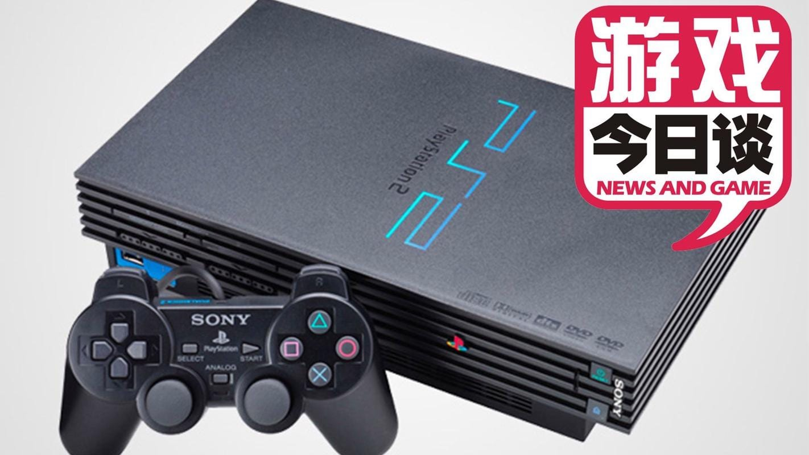

索尼 PlayStation 2

全球销量超 1.55 亿台的第六世代霸主，游戏阵容史级豪华。
客观评测
PS2 搭载 Emotion Engine 处理器（295MHz）、32MB RDRAM 与 147MHz Graphics Synthesizer，可输出 480i/480p 画面，多边形与特效表现全面超越前代主机。内置 DVD 播放让它成为影音中心，向下兼容 PS1 更留住老玩家。全球 1.55 亿台销量、超 4000 款游戏的库容，后期型号更自带网口，第六世代综合表现至今无人能出其右。
主观点评
PS2 是一代人的客厅图腾：深夜光盘转动的嗡嗡声、《战神》中奎托斯的怒吼、《最终幻想 X》的催泪结局，都深深刻在记忆里。它第一次让“买台游戏机顺便看碟”显得理所当然，也让国内玩家在网吧之外有了新据点。DualShock 2 握感扎实，震动与游戏节奏贴合得恰到好处。多年后想起通关《合金装备 3》的那个凌晨仍会心头一热——那是属于第六世代的浪漫。
优点与不足
- 史上最庞大游戏库，《GT 赛车 3》《战神》《最终幻想 X》名作如云
- 内置 DVD 播放，一台主机兼顾全家影音娱乐
- 向下兼容 PS1 游戏，老玩家无缝升级
- 首发价格偏高，记忆卡等配件还需另购
- 长时间运行发热明显，风扇噪音不小
- 联机对战受限于当时国内网络环境，普及度低
参数规格
| 屏幕 | 输出 480i/480p，支持色差分量逐行扫描 |
|---|---|
| 处理器 | Emotion Engine，MIPS R5900，约 295MHz |
| 图形 | Graphics Synthesizer 147MHz，4MB 显存 |
| 内存 | 32MB RDRAM |
| 存储介质 | DVD-ROM / CD-ROM，8MB 记忆卡 |
| 手柄 | DualShock 2，支持震动与压力感应按键 |
| 网络 | 后期型号内置以太网，支持宽带联机对战 |
| 音频 | SPU2 音频芯片，支持杜比数字 5.1 声道 |
| 尺寸重量 | 301×178×78mm，约 2kg |
| 首发大作 | 《山脊赛车 5》《铁拳 TT》《实况足球 2000》 |